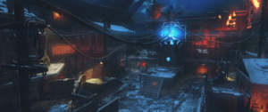

Nacht Der Untoten

Verruckt

The Giant
September 3rd, 5AD - The Apothicans from the Dark Aether Dimension send Element 115 to Earth. Their hope is that the Element will one day cause war in the dimension, making a bridge between the Earth and the Dark Aether.
January 15th, 1292 - On 115 day a great war between humanity and the Apothicans begins. Among the humans are Primis, Sir Pablo, the Wolf King, Keepers, and many other men. Among the Apothicans is their leader, the Shadowman, Margwas, Parasites, Tentacles, Corrupted Keepers, and many other Apothicans.
April 14th, 1294 - Sir Pablo Marinus is freed from a Margwa by four unknown heros wielding four staves. These four would become known as Primis
Decemeber 31st, 1299 - Humanity and the Keepers togther defeat the Apothicans, ending The Great War. The apothicans hide an Aether Pyramid on the moon and are banished to the dark aether, eventually also evolving into Apothicans. The remaining keepers become guardians. In all The Great War lasted seven years, eleven months, and seventeen days.
January 1st, 1300 - Primis instruct the Wolf King to build the castle of Der Eisendrache. Primis then disappear from history.
September 19th, 1318 - As of his request, the Wolf King's servant Arthur scatters and buries his bones in the castle, with the kings wolf by his side.
September 20th, 1318 - Temporal Rifts teleport Arthur to Resolution 1295 in 2025 Angola
June 30th, 1908 - A meteor containing Element 115 crashes near the Stony Tunguska River.
August 30th, 1925 - A german by the name of Doctor Edward Richtofen joins the Illuminati.
February 4th, 1931 - Maxis creates Group 935, an expirimental group dedicated to the study of Element 115. Maxis tells his scientists they "represent the future of technological advancement" and will be "pioneers of human discovery." The group swears to work in secrecy from their respective governments. As Maxis says, "we cannot afford to let this power fall into the wrong hands."
November 5th, 1934 - On 115 day Maxis's daughter is born, named Samantha Maxis. Her mother dies in childbirth.
August 11th, 1936 - Maxis Invites Richtofen to join Group 935. He joins, secretly acting for the needs of the Illuminati
April 10th, 1937 - The Imperial Japanese Army discovers Element 115 meteor fragments in a swamp in Japanese territory. They create the Rising Build Facility to continue their research, and make Division 9 to oversee operation of the facility
June 14th, 1937 - The US Goverment discovers Element 115 at Groom Lake, Nevada, this eventually becomes the site of Area 51
July 2nd, 1939 - Maxis and Richtofen begin teleportation expirements with the Matter Transference Prototype, to mild success. The subjects are teleported, but their chemical composition is alerted, leaving them catatonic and changed.
August 5th, 1939 - Using 115, Maxis and Richtofen reanimate one of the teleported corpses for the first time. Initially it obeys, but soon becomes rabid and attacks them. The test subject was soon killed
September 3rd, 1939 - Richtofen begins devolpment of the Wunderwaffe DG-2, an electric weapon.
September 3rd, 1939 - Germany invades Poland, two days later England and France declare war on Germany, officaly starting WW2
Novemeber 23rd, 1939 - Maxis turns to Nazi Germany for additional fundraising. Germany agrees, expressing intrest in their weapons research, teleportation technology, and the reanimated undead subjects.
December 4th, 1939 - During Test Trial 151, Richtofen and Doctor Schuster teleport a wallnut in the first sucessful teleport where the chemical composition was not alerted.
December 5th, 1939 - Maxis is not impressed by Richtofen and Schuster's discovers and he declares teleportation, especialy on this small a scale, a waste of time. He reveals to Richtofen that Group 935 will soon be funded by Germany. Richtofen worries this will lead to massive defections, he continues his expirements in secret.
January 4th, 1940 - Richtofen agrees to participate in him and Schuster's first human teleportation test. He is teleported to the moon, and encounters the MPD, an Aether Pyramid hidden by the apothicans. When Richtofen touches the pyramid he starts hearing the voices of the Dark Aether, including that of the Shadowman. The device teleports him to Shangri-La. Now corrupted by the Dark Aether, Richtofen is driven insane by the quest to find Agartha.
January 5th, 1940 - Richtofen is worshipped by the natives of Shangri-La. Richtofen discovers the focusing stone and an alter is built in his name.
January 23rd, 1940 - Ninteen days after the teleportation trial, Richtofen returns to Schuster with a plan to build Griffin Station. A base on the moon.
January 24th, 1940 - Richtofen leaves the Illuminati. When he was asked why he abandoned his obligation to them, he replies, "Teddy was a liar."
March 13th, 1940 - Construction of Griffen Station on the Moon begins. Mad about Maxis' alignment with Germany, other angry Group 935 scientists join the cause.
July 13thm 1940 - Maxis instructs his assistant Sophia to write a letter to the Reichstag High Command requesting additional funds. Though he reports that mass production will soon be under way, Der Riese lacks 115 and funding.
August 1st, 1940 - As of Maxis' request, Germany creates two new facilities for Group 935. They are the Kino Facility, a repurposed theatre, and the Asylum Facility at the Wittenau Sanatorium in Berlin.
August 18th, 1940 - As of Germany's request, the Japanese Imperial Army hand over the Rising Sun Facility to Group 935. Division 9 remains involed on site.
October 3rd, 1940 - Group 935 establishes a research facility in Siberia near the Tunguska River.
November 6th, 1940 - Group 935 establishes a research facility at Der Eisendrache
June 24th, 1941 - Nikolai Belinski's wife is killed during the German advance into the Soviet Union. In an effort to numb the pain, Nikolai increasingly turns to Vodka.
Decemeber 7th, 1941 - Japan bombs Pearl Harbor.
January 11th, 1942 - Maxis gives Fluffy to Samantha, The dog is expecting a litter
January 20th, 1942 - Maxis tests the first file for storage on the data servant.
January 26th, 1942 - On the data servant, Maxis catalogs locations with prominent Element 115 deposits. He includes information about it's various applications and cities that the reanimation of dead cells is a possible side effect
January 30th 1942 - Richtofen completes the prototype of the Wunderwaffe DG-2
February 1st, 1942 - Richtofen names Doctor Groph lead scientist of Griffen Station with it's completion. Rictofen returns to earth to continue the charade with Maxis. Schuster and Groph discover the power of the MPD.
February 2nd, 1942 - In a speach to his staff, Groph speaks optimistically about Griffin Station's establishment as a permant base of operations.
April 17th, 1942 - Maxis develops the Ray Gun prototype at the Rising Sun Facility. H. Porter starts to develop a second generation model
June 13th, 1942 - Because of temporal rifts from 1963 Kino der Toten, Monty reaches across time and offers little nudges. One nudge is developing Group 935's Element 115 fused elixers. They create four beverages known as Juggernog, Quick Revive, Speed Cola, and Double Tap. These are the first of the perk a colas.
June 28th, 1942 - Group 935 continues development of the Pack a Punch machine
July 18th, 1942 - Groph and Schuster unwittingly discover how to charge the MPD when Schuster kills a rat near the device. They report their findings to Richtofen.
July 20th, 1942 - Richtofen sends sacrifices, soldiers and scientists to the moon to charge the MPD.
August 23rd, 1942 - The Battle of Stalingrad Begins.
November 5th, 1942 - On 115 day, Takeo Masaki is sent by the Emperor to oversee the working of Group 935 and Divison 9 at the Rising Sun Facility
December 8th, 1942 - Richtofen shares the Perk a Cola recipies with Griffin Station, they develop mule kick.
December 9th, 1942 - Nikolai's brother is killed in the Battle of Stalingrad
December 14th, 1942 - Richtofen creates the monkey bomb
December 16th, 1942 - Maxis expresses his concern over 115's impact on Richtofen's behavior in a personal log, unknowning that he is under the Shadowman's control. Maxis worries if inviting Richtofen to 935 was a mistake.
December 20th, 1942 - Maxis is transferred to the Kino facility to focus on creating an undead army for Germany. Sophia comes with maxis but Samantha stays in Richtofens care.
January 8th, 1943 - Maxis worries he and Sophia have grown too close. He considers sending her away.
January 16th, 1943 - Nikolai is captured by German forces in the Battle of Stalingrad. He becomes a 935 test subject.
January 27th, 1943 - Maxis reports success with subject Two-Six, whose "violent outbursts have been greatly reduced. Maxis believes "this method of treatment will be 100 percent effective in most cases."
February 2nd, 1943 - The Battle of Stalingrad ends.
February 10th, 1943 - Maxis reports the treatment has been perfected. Maxis believes the delivery of a zombie army can be accelerated, as long as subject Two-Six can retain impressions for longer than twenty six hours.
February 12th, 1943 - After attacking a handler, Subject Two-Six is killed and deemed "another setback."
May 18th, 1943 - Harvey Yena begins his work with Group 935.
June 6th, 1944 - British and US troops successfully land on the Normandy beaches.
June 15th, 1943 - Takeo reports to the Emperor that the work done at the Rising Sun Facility is unacceptable.
June 24th, 1943 - On the orders of the Emperor, Takeo is taken prisoner by Group 935 and Divison 9, he is used as a test subject.
July 14th, 1944 - Maxis reports new success with the undead, he still however believes the undead cannot be controlled.
September 2nd, 1944 - Pablo Marinus, a Mexican Spy is captured by Group 935 at Der Eisendrache.
November 5th, 1944 - Samantha Maxis turns 10 years old
April 30th, 1945 - Hitler commits suicide.
May 7th, 1945 - Germany surrenders to the western allies, two days later they surrender to the Soviets.
May 9th, 1945 - In his cell, Pablo writes of his visions of The Great War. He describes Primis saving him from a Maragwa in 1294, he makes note that the knights that saved him wore tunics simmilar to those of Der Eisendrache.
June 4th, 1945, NACHT DER UNTOTEN - 935 trucks hauling Element 115 between 935 facilities get stuck when an Allied plane crashes over an airfield. Marines from the crash fight as long as they can, but the zombies eventually overpower them.
June 17th, 1945 - Peter McCain infiltrates Group 935 at Der Riese
June 29th, 1945 - Groph and Schuster develop the Wave Gun.
July 15th, 1945 - Richtofen travels to the Siberian Facility to do further research on the live specimens. 935 begin transferring Nikolai, Pablo, and Takeo. Richtofen takes Samantha with him as her guardian.
July 29th, 1945 - While at the Siberian Facility, Group 935 begins to develop Deadshot Daiquiri.
August 1st, 1945 - Nikolai, Pablo, and Takeo arrive at the Siberian Facility.
August 6th, 1945 - The US drop an atomic bomb on Hiroshima
August 9th, 1945 - The US drop an atomic bomb on Nagasaki
August 31st, 1945 - CIA Handler Cornelius Pernell confirms that Peter McCain has sucessfully infiltrated Group 935 and has been transferred to the Asylum Facility. Cornelius suspects Group 935 is losing control of their expiriments and has sent in a Marine Recon unit to extract McCain. Tank Dempsey is the lead of the squad.
September 1st, 1945 - Peter is outed as a spy and captured by 935.
September 2nd, 1945 - Pablo dies following a spleen removal. Richtofen reveals he has been performing experiments on Samantha. WW2 ends with Japan's surrender, however Group 935 continue their research. Temporal rifts begin to affect the Asylum facility. An orderly reports increasing problems with the test subjects. many in the facility have begun hearing voices coming from the walls, including the sobbing of a boy and a girl screaming, and a man shouting for children to close the windows.
September 3rd, 1945 - After an outbreak at the Asylum facility Peter McCain escapes.
September 6th, 1945, VERRUCKT - Dempsey, John Banana, Smokey, and a fourth marine arrive at the Asylum facility to find it overrun by zombies. Smokey is bitten by the zombies and turns into one. They fight off the horde as long as they can. Dempsey is apprehended by 935.
September 7th, 1945 - John Banana writes messages and records his last message while being eaten alive by Smokey.
September 10th, 1945 - Richtofen reports an American spy has been captured and will replace Pablo. The subject is Dempsey.
September 13th, 1945 - Cornelius Pernell attempts to send a transmisson to Peter McCain, telling him to rendezvous at the Rising Sun Facility.
September 17th, 1945 - Dempsey arrives at the Siberian Facility.
September 20th, 1945 - Richtofen documents the personality of each of his test subjects. Dempsey's intellext seems low, but his will is strong. Takeo is staring at the floor muttering proverbs over and over. Nikolai has begun responding to stimuli, but only after vodka is put in. Richtofen reports that their minds are almost completly broken, with no memory of who they once were.
September 27th, 1945 - Richtofen returns to Der Riese with the test subjects and Samantha.
October 1st, 1945 - Maxis reports on Richtofen's findings with the live test subjects noting that their psyche remains intact, but all memories have been lost. On the same day, Richtofen, after learning Maxis has not been mass producing the DG-2 as he swore he would, revels in his plot to destroy Maxis and his daughter. He vows he will no longer continue to work to develop Maxis's undead army.
October 8th, 1945 - Groph reports to Richtofen that the MPD is nearly ready.
October 12th, 1945 - Groph informs Richtofen that the MPD is ready and awaiting a conduit. Richtofen says he proceed with Operation Shield and dispose of Maxis and Samantha.
October 13th, 1945 - Though frustrated that "the matter transference tests... have been largely unsuccessful," Maxis acknowledges that the test subjects departure from their original point of origins is undeniable." However, Richtofen's suggestion that the subjects have been transported not through space, but time itself causes Maxis to worry if his "irrationality may soon prove a liability to our endeavors. Maxis and Richtofen perform teleportation trials on Test Subject Number 3, 4 and 5, they all fail. Test Subject 5, or Fluffy (Samantha's Dog) turns into the first hellhound. Samantha sees this and runs into the test chamber, Maxis chases after her. Richtofen seals them both inside the test chamber and teleports them. Samantha is teleported to the moon, were Groph and Schuster are continuing their work on the MPD. Samantha runs into it, and is corrupted by the Dark Aether. Maxis is teleported to the crazy place and develops the power to merge with electricity. Richtofen returns to the moon and learns Samantha is trapped inside the MPD. He orders Groph to teleport Maxis to Griffen Station to coax Samantha out of the device. He also warns Groph to keep an eye out for an "evil looking dog." Maxis approaches the MPD and persiades her to come out, once she does Maxis instructs Samantha to "Kill them... all." Maxis kills himself and merges with the technolagy of Griffen Station, while Samantha unleashes a zombie horde upon the base.
October 13th, 1945, THE GIANT -